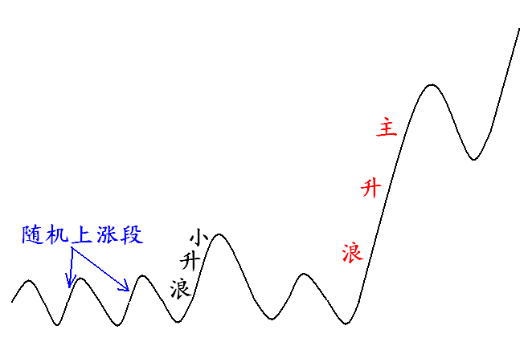

第176篇•教你炒股系列42:随机波动、小升浪与主升浪
谷为陵
在深入探讨主升浪的时候，我们就必须清楚价格上涨的几种形式。若以价格涨幅大小来进行划分的话，价格上涨可以分为四种主要的波段：随机波段、小波段、中波段与大波段，这些我在前面都讲过。
若以涨幅来论，那么，随机波段的涨幅一般不大于30%，小波段的涨幅在30%～50%，中波段的涨幅在50%～100%，而大波段的涨幅在100%以上。我在此所讲的涨幅，特指股价从最低价到最高价的变动区间。虽然从严格意义上看，主升浪应该是大波段，但在有些情况下，我们在可以将中大波段都视为主升浪，这并不影响对于主升浪的理解，因为主升浪也是分不同级别的，这在以后还会讲到。随机波段、小波段（小升浪）和主升浪如下图所示：

对于绝大多数股票来说，在70%以上的交易时间内，股价是处于随机波动或者小幅涨跌状态，主升浪往往是几年才能够出现一次的。由于A股市场大多数股票属于强周期股，而强周期股的主升浪往往是伴随着行业的景气上升而出现，因此，强周期股的主升浪持续时间一般不长，长的不过2年左右，短的只有几个月。另外，
A股市场很多股票的业绩不稳定，需要借助各种题材改善公司的基本面，虽然题材有时候也能够催生出一轮主升浪，但是，这类主升浪的持续时间往往也不长。
所以，在A股市场，对于绝大多数股票来说，不仅主升浪几年才难得见到一次，而且主升浪持续的时间也不长。一句话，主升浪对于任何一只股票来说，都是稀罕物，这一点一定要清楚。特别是对于短线客来说，更应该牢记这一点。为什么呢？因为短线客往往在分不清价格上涨波段性质的情况下，就重仓交易或者频繁交易，从长期来看，他们的交易在多数情况下会落入非主升浪的区间，赢面很小。
不管是从长期投资还是从短线投机来看，抓主升浪——不论是长期抓住还是短期抓一下，赢面一定会大于在随机波段和小波段内折腾。这是一个看似简单的道理，可惜，大多数投资者却并不清楚。
我在前篇博文的开篇就讲过，主升浪的问题，是股票投资的基本问题。我可以说句极端的话，有无抓主升浪的意识以及会不会抓主升浪，是区分高手和低手的唯一标尺，也是长期成功者与长期平庸者、长期失败者的分水岭。
说了这样多的主升浪的问题，也许有些网友已经坐不住了，他们正急着问：“说了半天，这主升浪到底该怎样抓呀？”大家都知道“点石成金”的故事，得到一块金子并不难，你可以直接管人家要，但要拥有“点石成金”的手却不是那么简答的事情了，你需要学习。
关于主升浪的问题，现在要搞清楚两个基本问题：一是要抓主升浪，主升浪能够带来高收益和长期成功；二是主升浪并不常见，并不容易抓。这就是股票投资和投机的玄妙之处，也是我们不得不直面的难题：去抓并不容易抓的主升浪。
但知道了问题所在，其实就已经找到了答案的一半，剩下的问题无非就是怎样抓主升浪。知道要抓主升浪，这是战略问题，怎样抓主升浪，这是战术问题。战略正确，就不会犯大错，若战略错误，肯定会犯大错，这是一个常识性的问题。在正确的战略指引下，再采取正确的战术，那么，获胜的可能性就大大增加了。
今天就谈到这里吧。